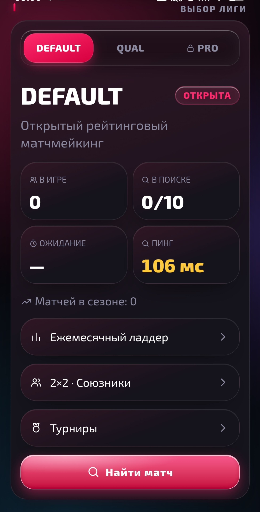
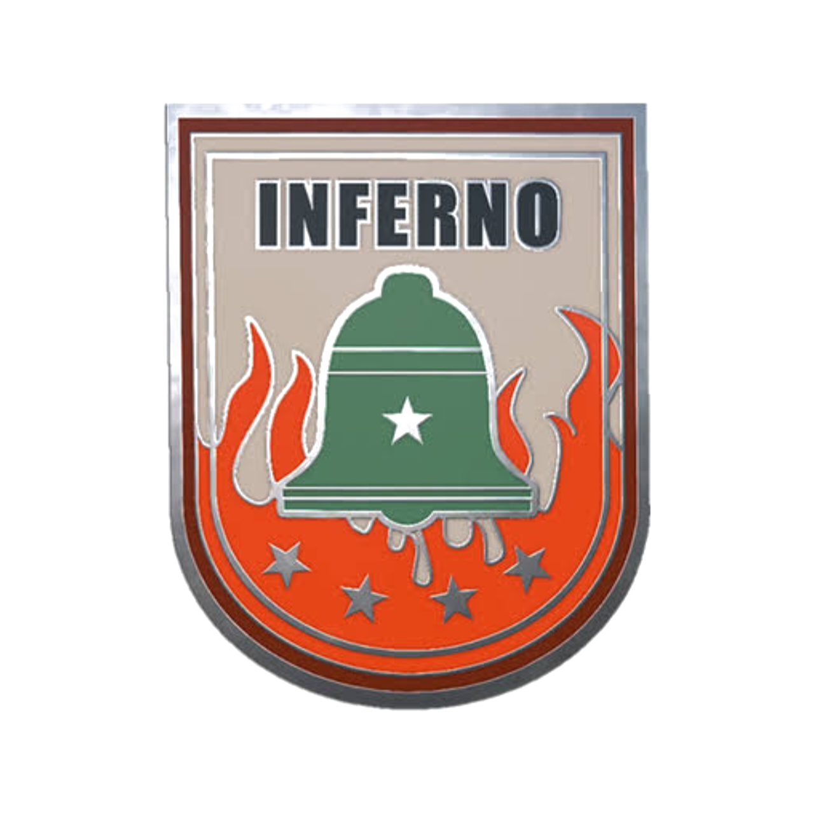
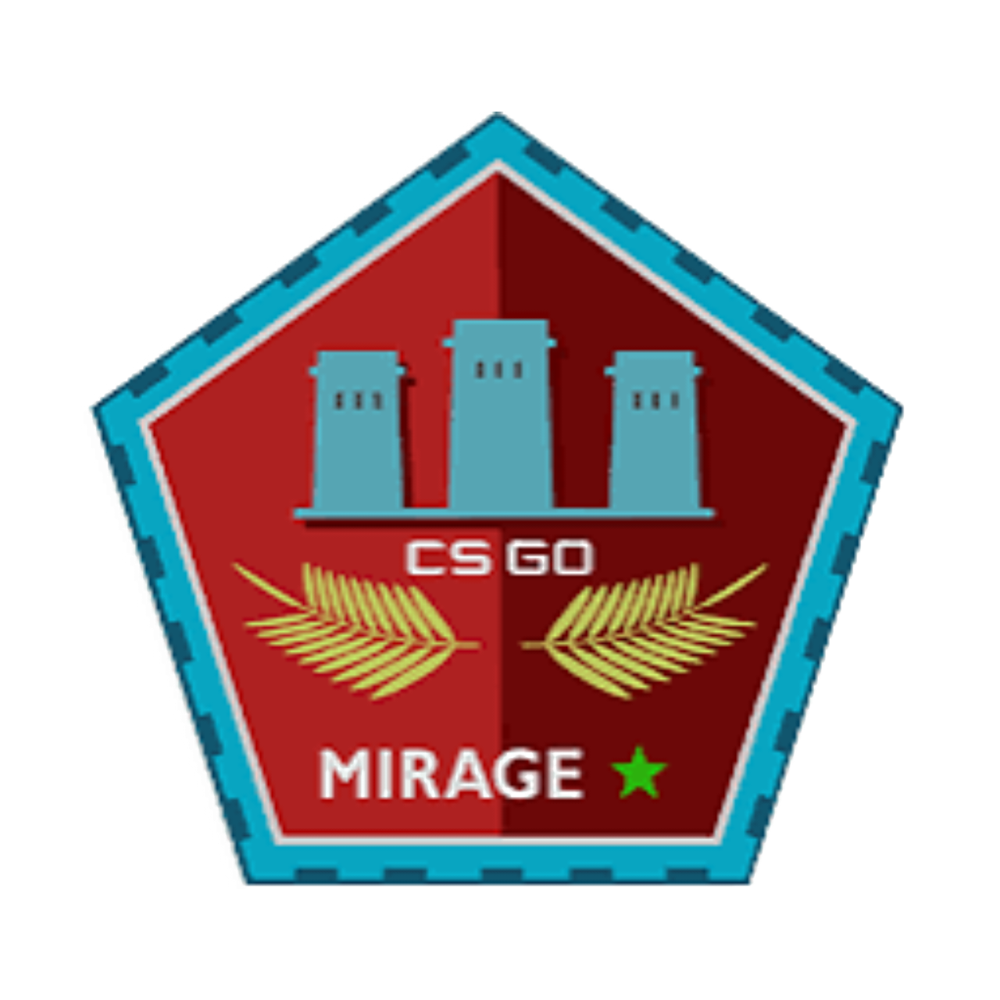
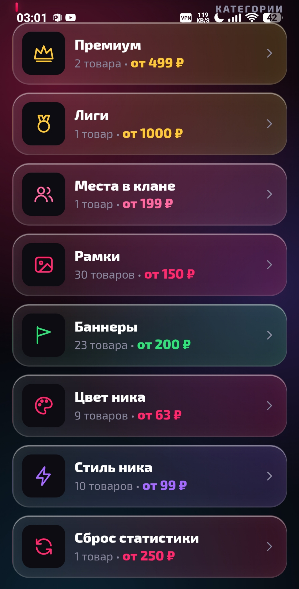

РЕЙТИНГ

Понятная система: ELO, уровни, сезоны
Никаких скрытых коэффициентов. Начисление очков зависит от исхода матча и вашего личного вклада в игру.
Собирайте пати, ищите соперников по рейтингу, баньте карты и играйте 5 на 5 или 2 на 2 с командным голосом. Победы, поражения и личная статистика меняют ELO — случайных тиммейтов из публичных лобби здесь нет.

Все игроки подтвердили участие • переходим к бану карт
Осталось 2 карты • 30 секунд на ход
Платформа берёт на себя подбор, бан карт, лобби и подсчёт результата. Вам остаётся играть.
Каждый матч проходит один и тот же путь: подбор, бан карт, лобби, результат, рейтинг. Никаких договорённостей в чате.
Очередь ищет соперников близкого рейтинга и расширяет диапазон, пока вы ждёте. Команды делятся так, чтобы средний рейтинг сторон был как можно ближе.
Зовите друзей по статик-ID, собирайте состав до пяти человек и заходите в очередь вместе. Пати не разбивается при формировании команд.
Четыре карты, три бана по очереди — остаётся одна. Ход длится 30 секунд, по таймауту карта банится автоматически, так что этап никогда не зависает.
Голосовой чат встроен в приложение: отдельная комната на пати и на каждую команду в матче. Микшер громкости, мут в один тап, сторонние приложения не нужны.
Таблица лидеров по каждой лиге и сезону, ранг в профиле, история матчей с K/D/A и дельтой рейтинга за каждую игру.
Рамки, баннеры, флаги, эмодзи и цвет ника за Cyber Coin. Чёрный рынок открывается по расписанию со скидками 40–70%.
Сервер ведёт матч сам: у каждой фазы есть таймер и правило выхода.
Выбираете лигу и жмёте «Найти матч». Приложение показывает, сколько людей в игре и в поиске прямо сейчас.
Матч собран — все игроки подтверждают участие за 30 секунд. Кто-то отказался: остальные возвращаются в очередь без потери места.
Капитаны по очереди убирают карты, пока не останется одна. Капитана выбирает жребий: чаще им становится самый опытный игрок команды, а в пати из 3+ — её лидер.
Сервер случайно выбирает хоста из двух капитанов и раскрывает его игровой ID из CounterFlame. Копируете, заходите в лобби, играете.
Любой из участников загружает скриншот таблицы. Счёт распознаётся автоматически, команды голосуют, модератор подтверждает — и ELO пересчитывается.
Никаких скрытых коэффициентов. Начисление очков зависит от исхода матча и вашего личного вклада в игру.
Статистика считается отдельно по каждой лиге и сезону — переход в другую лигу не переносит ELO.
Открытый рейтинговый матчмейкинг. Выдаётся всем игрокам сразу после регистрации.
Покупается в магазине или открывается бесплатно за топ-30 месячного ладдера 8–10 уровня. Держится, пока выполняете норматив по матчам и K/D.
Закрытая элитная лига — доступ выдаётся вручную.
В приложении игрок сам выбирает платформу, с которой играет — в лобби и профиле рядом с ником отображается значок PC или Телефона.
Четыре карты — после трёх банов всегда остаётся ровно одна. Играть только на любимой карте не выйдет.


Матч закрывается только тогда, когда его подтвердили обе стороны и живой модератор.
Итог матча подтверждается скриншотом таблицы. Один и тот же файл нельзя переиспользовать в другом матче — проверка идёт по хешу.
Скриншот уходит на голосование всем участникам матча. Пока стороны не согласятся, матч не двигается дальше.
Финальные K/D/A и счёт вносит модератор. Только после этого начисляется рейтинг — отменить уже проверенный матч голосованием нельзя.
На игрока можно пожаловаться прямо из матча: читы, токсичность, руин, выход из игры. Аккаунт под подозрением уходит на проверку и теряет доступ к матчам.
Рамка, баннер, флаг региона, статус устройства (PC или Телефон), эмодзи и цвет ника — всё это видно соперникам в лобби и в таблице лидеров.

CyberFaceit уже доступен для Android в RuStore и прямо в браузере на любом устройстве.